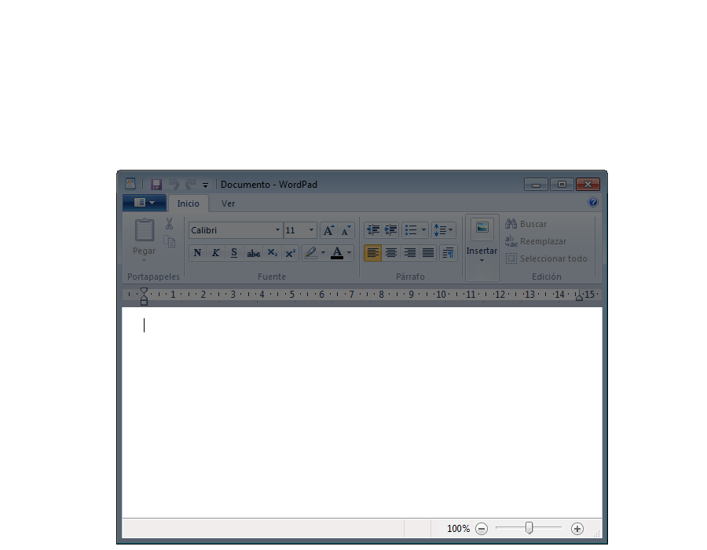
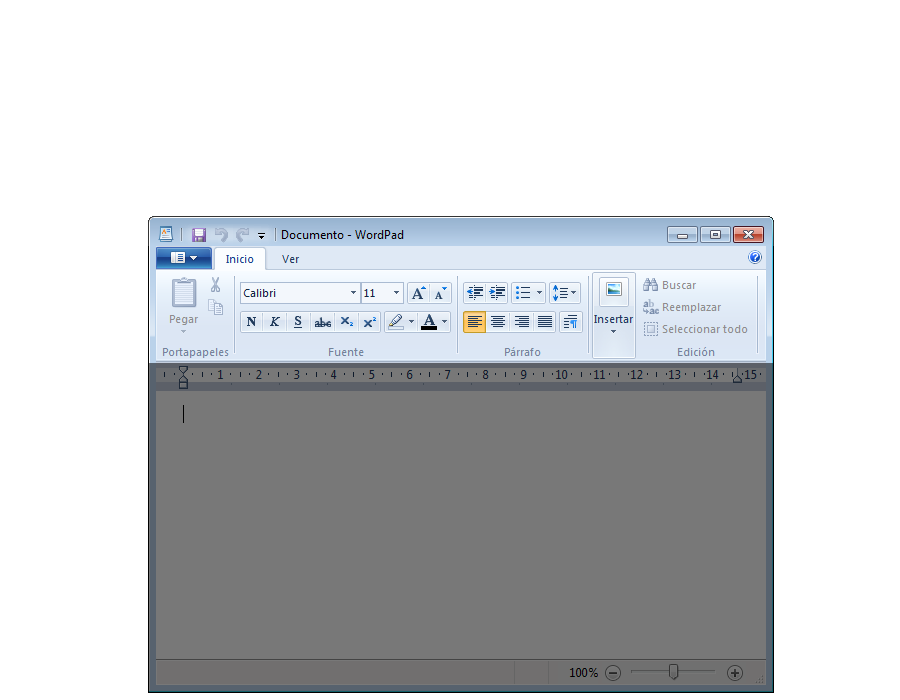
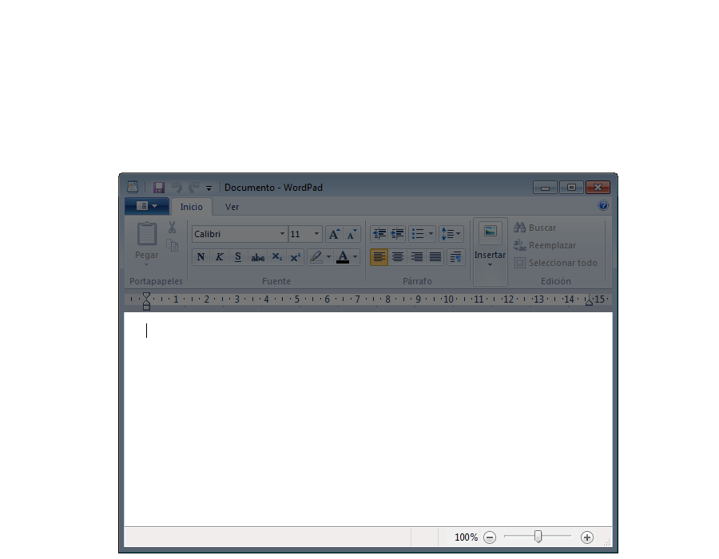
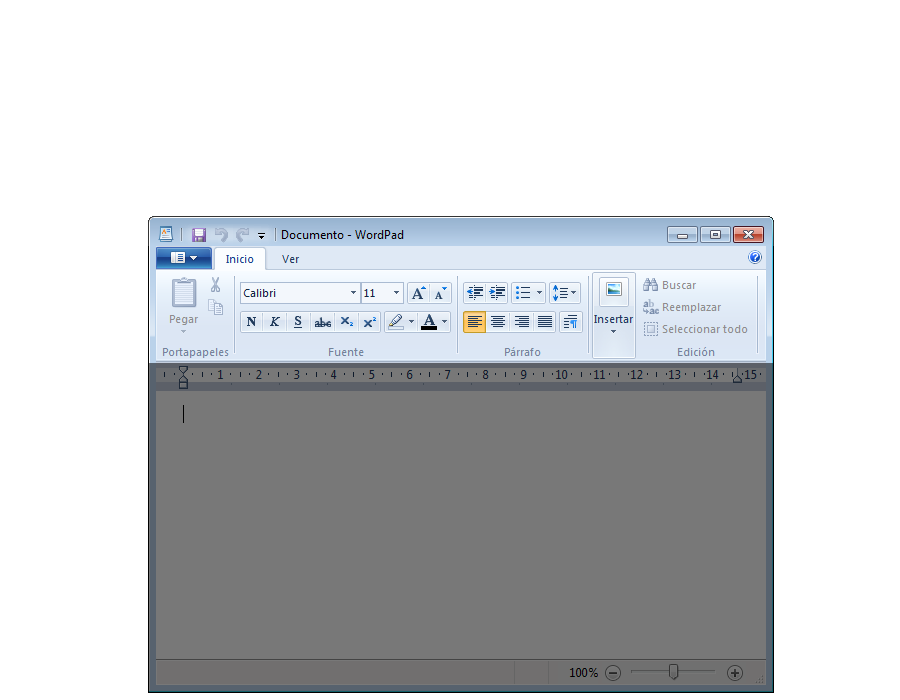
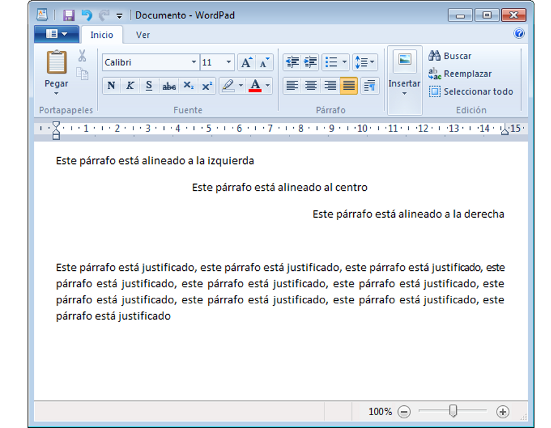
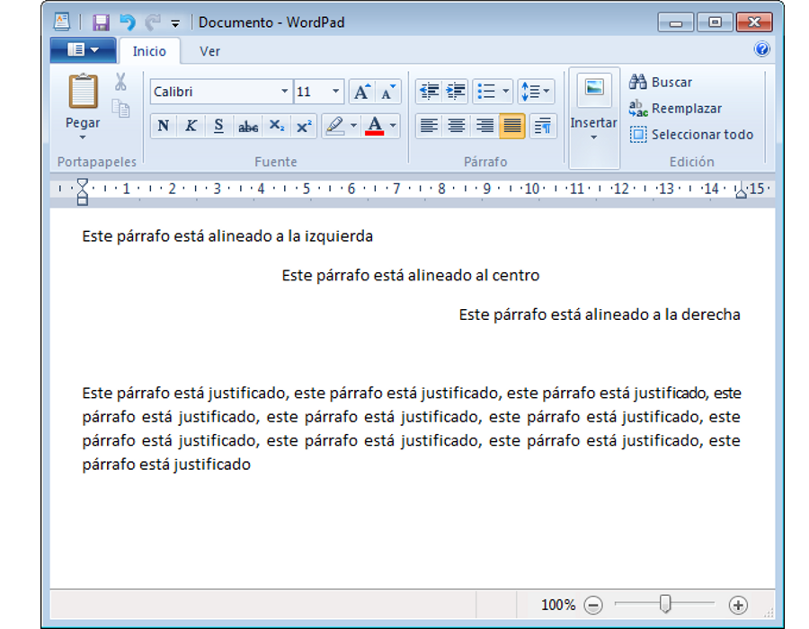
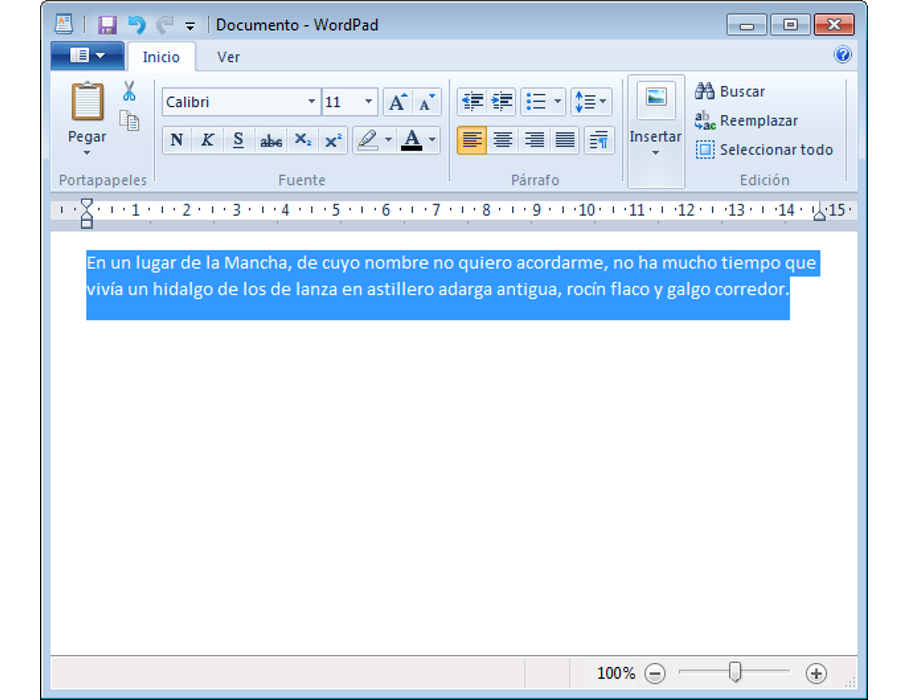
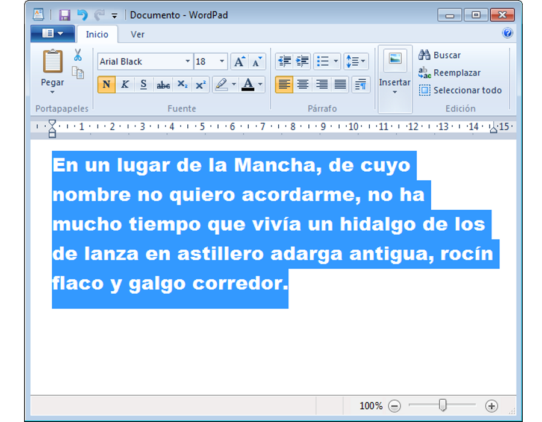
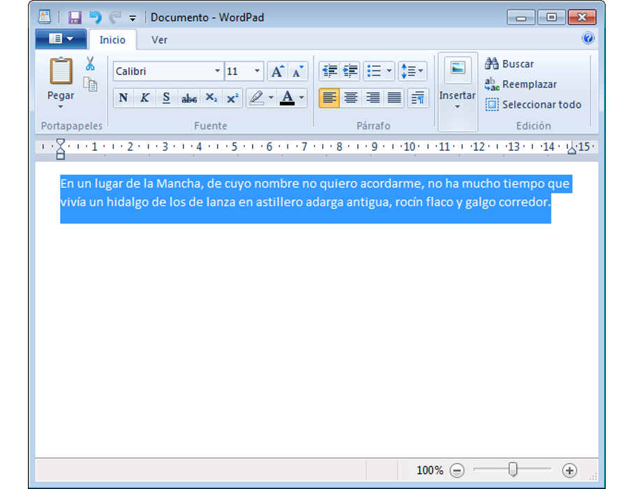
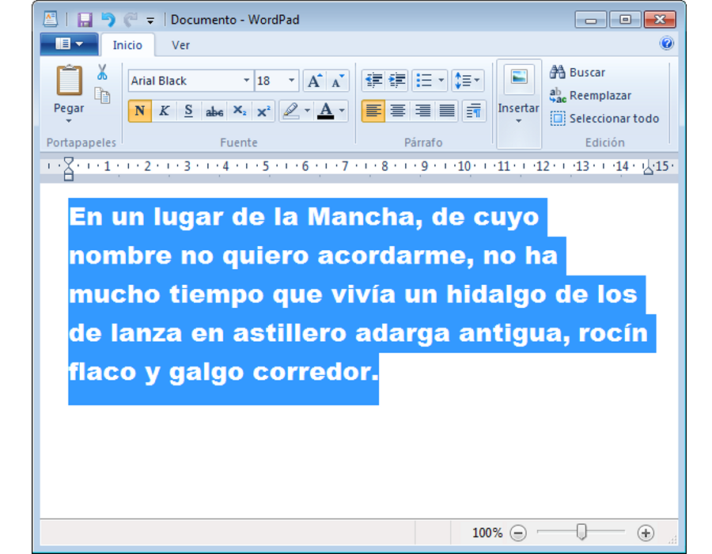

Iniciación a la informática e Internet
WordPad
Apreta la tecla → para avanzar.


WordPad es un procesador de textos básico que se incluye con casi todas las versiones de Microsoft Windows desde Windows 95 en adelante. Es más avanzado que el Bloc de notas pero más sencillo que el procesador de textos de Microsoft Works y Microsoft Word.
En Windows 7 han renovado totalmente la interfaz de WordPad, haciéndola similar a la nueva interfaz de Office 2010.

Cambia de foto con las teclas: ↑ y ↓
Es una aplicación de edición de textos básica, podemos utilizarla para:
WordPad es una aplicación y por tanto debemos abrirla. Veamos donde está ubicada para poder abrirla.
Vamos a ver las herramientas que nos proporciona WordPad para la edición de textos.
 



Cambia de foto con las teclas: ↑ y ↓
Comentemos las principales herramientas de las que disponemos en WordPad para dar formato a nuestro documento.


Cambia de foto con las teclas: ↑ y ↓
 

Cambia de foto con las teclas: ↑ y ↓
En la pantalla siempre vemos el puntero del ratón que podremos mover para seleccionar texto o aplicar formatos.
Pero si os fijáis veréis también un cursor parpadeante, es el cursor de edición que indica dónde empezaremos a escribir cuando tecleemos.
Vamos a explicar ahora una de las técnicas básicas de la edición de textos, que nos permitirá acelerar muchísimo la creación de documentos que hagamos.
 




Cambia de foto con las teclas: ↑ y ↓